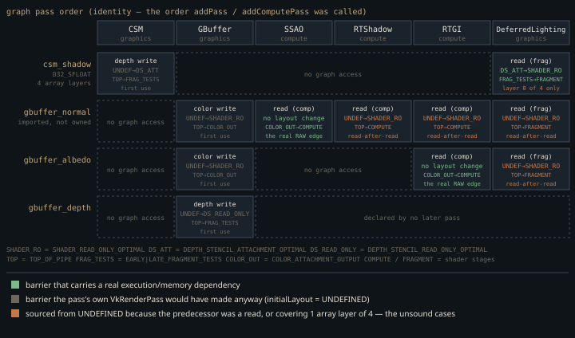

Monograph · Tree · ← Sitemap · RenderGraph
graph
RenderGraph
Declare passes, barriers, compile order.
Four promises, one half-delivery
The class docblock promises a full frame graph: deduce resource lifetimes, alias transient memory, generate optimal barriers, sort passes into execution order.
* - Alias transient resource memoryohao/render/graph/render_graph.hpp:70Only the third has any implementation behind it, and the barriers it generates are neither optimal nor — for the one multi-layer resource in the frame — correct; both failures are traced below. The only production consumer is `DeferredRenderer`, which rebuilds the graph every frame — `reset()`, six pass registrations, `compile()`, `execute()`, all inside one command buffer — to get one thing: image-layout barriers computed centrally, between passes that know nothing about each other. Nothing is aliased, nothing is reordered, no memory is owned. Reading this unit as "a frame graph" will mislead you; reading it as "a barrier scheduler with a frame-graph-shaped API" will not.
The six are CSM, GBuffer, SSAO, RTShadow, RTGI and DeferredLighting, in that order — three `addPass`, three `addComputePass`. The last two are conditional: `RTShadowTechnique` and `RTGITechnique` must have initialised and the TLAS must hold at least one instance, which on ray-tracing hardware with geometry in the scene is the ordinary case, not an opt-in.
if (m_useRTGI && m_rtGI && m_rtAccel && m_rtAccel->isSupported() &&ohao/render/deferred/deferred_renderer.cpp:413The graph owns nothing it schedules
All six textures the deferred frame tracks — G-buffer normal, albedo and depth, the CSM shadow array, the SSAO target, the lighting output — enter through `importTexture`, which marks them external with `ownsMemory = false`. Allocation then skips them, and so does teardown.
if (!desc.isExternal && m_physicalTextures[i].image == VK_NULL_HANDLE) {ohao/render/graph/render_graph.cpp:583The other half of the file — `allocateTexture`, `findMemoryType`, the `DEVICE_LOCAL` image and view creation — runs only for a descriptor that is not external, and the only way to make one is the `PassBuilder::create*Attachment` family, which nothing in `ohao/`, `examples/` or `tests/` calls. `vkCreateImage` here has never run in a shipping frame, and `isTransient` — the flag the docblock hangs aliasing on — sits on every texture and buffer descriptor with no reader anywhere in the tree.
Declare-only: how a pass keeps its own VkRenderPass
The hinge of the whole design is a deliberate omission. `declareColorWrite` and `declareDepthWrite` record a resource access for barrier purposes but do *not* push the handle into the pass's attachment list.
// NOT added to colorAttachments — the pass manages its own VkRenderPassohao/render/graph/render_graph.cpp:154That omission cascades. `createRenderPasses` skips any pass with no attachments, so `vulkanRenderPass` stays null, so the `vkCmdBeginRenderPass` block in `execute()` never fires and the framebuffer loop finds nothing to build.
if (pass.colorAttachments.empty() && !pass.depthAttachment.isValid()) {ohao/render/graph/render_graph.cpp:675For such a pass `execute()` does exactly two things: flush the compiled barrier list, then invoke the callback — which begins and ends the pass's own `VkRenderPass` itself.
The price is a contract with no compiler behind it: the `finalLayout` argument must equal the `finalLayout` of the corresponding attachment in the pass's own render pass, because that value is what the graph will use as the *source* layout of the next barrier. The G-buffer pass declares `SHADER_READ_ONLY_OPTIMAL` for its colour handles and `DEPTH_STENCIL_READ_ONLY_OPTIMAL` for depth —
builder.declareColorWrite(m_graphNormalHandle,ohao/render/deferred/deferred_renderer.cpp:348— because that is what its own attachment descriptions say, in a different file that the graph never reads.
attachments[4].finalLayout = VK_IMAGE_LAYOUT_DEPTH_STENCIL_READ_ONLY_OPTIMAL;ohao/render/deferred/gbuffer_pass.cpp:520Letting the graph build the render passes was the obvious alternative, and the code for it is right there in `createRenderPasses`. It was rejected because that generated pass has one fixed shape: a single subpass, `LOAD_OP_CLEAR` on every attachment, no subpass dependencies, and hardcoded final layouts — `COLOR_ATTACHMENT_OPTIMAL` for every colour attachment, `DEPTH_STENCIL_ATTACHMENT_OPTIMAL` for the depth one. The G-buffer needs four colour targets ending in `SHADER_READ_ONLY_OPTIMAL` plus two external subpass dependencies; CSM needs one framebuffer per cascade layer over a shared render pass. Declare-only keeps the barrier model and leaves each pass free — at the cost of two descriptions of the same layout that a human keeps in sync.
What the barrier compiler actually knows
`computeBarriers` is one linear walk carrying a map from texture index to the last `ResourceAccess` on it, and it has four branches, not the two the shape of the problem suggests. A read whose predecessor is a write gets a full barrier — writer's stage, access and layout on the source side, reader's on the destination. A read whose predecessor is anything else falls to a second branch that takes its old layout from the physical resource, and only fires if that layout differs from the one the reader wants.
} else if (m_physicalTextures[read.texture.index].currentLayout != read.imageLayout) {ohao/render/graph/render_graph.cpp:618Writes split the same way. A write with a recorded predecessor gets a barrier only if the two layouts differ. A write with no predecessor — the texture's first appearance this frame — always gets one, and its source layout is not read from the physical resource at all but hardcoded to `UNDEFINED`.
barrier.oldLayout = VK_IMAGE_LAYOUT_UNDEFINED;ohao/render/graph/render_graph.cpp:659Because a declare-only write records the layout the image will be in *after* its pass, that first-use barrier emitted *before* the pass moves the image to its post-pass layout. The inversion is harmless only because every self-managed render pass uses `initialLayout = UNDEFINED` and clears: the pass immediately overwrites what the graph just asked for.
Three barriers earn the graph its place in the frame, and two of them are the same hazard. The G-buffer render pass ships its own external subpass dependency, and its destination stage is `FRAGMENT_SHADER` — which covers the lighting pass and says nothing whatever about a compute reader.
dependencies[1].dstStageMask = VK_PIPELINE_STAGE_FRAGMENT_SHADER_BIT;ohao/render/deferred/gbuffer_pass.cpp:556Three of the graph's passes are compute dispatches that sample G-buffer colour — SSAO, RTShadow and RTGI — and two of them own a target's *first* read after the G-buffer wrote it: SSAO on `gbuffer_normal`, RTGI on `gbuffer_albedo`. Only those two take the read-after-write branch, so `COLOR_ATTACHMENT_OUTPUT → COMPUTE_SHADER` is emitted exactly twice, each because a setup lambda called `readComputeTexture` and the graph turned it into a compute-stage read.
builder.readComputeTexture(m_graphAlbedoHandle);ohao/render/deferred/deferred_renderer.cpp:420Neither moves the image: both layouts are `SHADER_READ_ONLY_OPTIMAL`, the value `declareColorWrite` recorded. They exist purely for their stage and access scopes, and nothing else in the frame expresses that edge.
The third is the shadow map, which CSM leaves in `DEPTH_STENCIL_ATTACHMENT_OPTIMAL` and the lighting pass samples.
builder.readTexture(m_graphShadowHandle,ohao/render/deferred/deferred_renderer.cpp:471That transition is also where the emitter gets a detail right that is easy to get wrong: the aspect mask comes from the *format*, not the layout. A depth image on its way to `SHADER_READ_ONLY_OPTIMAL` still needs `VK_IMAGE_ASPECT_DEPTH_BIT`; deriving the aspect from the destination layout would have produced a colour aspect and a validation error.
isDepthFormat(tex.format) ? VK_IMAGE_ASPECT_DEPTH_BIT : VK_IMAGE_ASPECT_COLOR_BIT;ohao/render/graph/render_graph.cpp:443
Why every read-after-read starts from UNDEFINED
`reset()` clears every tracked layout to `UNDEFINED` at the top of each frame, on the reasoning that an `UNDEFINED → target` transition is always legal.
tex.currentLayout = VK_IMAGE_LAYOUT_UNDEFINED;ohao/render/graph/render_graph.cpp:523The subtlety is *when* that field is read. `compile()` runs before any barrier executes, and `currentLayout` only advances inside `execute()`. So at the moment the compiler consults it, every texture still reads `UNDEFINED`. The read-with-a-read-predecessor branch is therefore never "transition from wherever it was"; it is always "transition from `UNDEFINED`" — and Vulkan permits an implementation to discard the image contents across that transition.
The default frame emits four of them. `gbuffer_normal` is read by SSAO, RTShadow, RTGI and DeferredLighting in that order; only the first of those four finds a write in the map, so reads two, three and four each produce an `UNDEFINED → SHADER_READ_ONLY_OPTIMAL` transition on the normal target. `gbuffer_albedo` contributes the fourth: RTGI reads it first and takes the read-after-write branch, DeferredLighting reads it second and does not.
Both sides of all four name the same layout, so nothing needs to move — which is why the pipeline renders — but the code depends on that rather than stating it. No one-line guard helps: skipping the barrier when old equals new is already the branch's entry condition, and `reset()` has just pinned `currentLayout` to `UNDEFINED`, so the test passes every time. The fix is structural — track layouts in compiled state that advances with the walk, not in a physical resource whose layout field the frame reset has blanked.
One barrier, four cascades
Every image barrier the graph emits covers a single mip and a single array layer.
imageBarrier.subresourceRange.layerCount = 1;ohao/render/graph/render_graph.cpp:447The CSM shadow map is not a single layer. It is a `D32_SFLOAT` array with one layer per cascade, imported through its full-array view.
static constexpr uint32_t CASCADE_COUNT = 4;ohao/render/deferred/csm_pass.hpp:15The lighting shader samples all four through one `sampler2DArray` binding.
// 6: Shadow map array (sampler2DArray, 4 cascades)ohao/render/deferred/deferred_lighting_pass.cpp:549So the `DEPTH_STENCIL_ATTACHMENT_OPTIMAL → SHADER_READ_ONLY_OPTIMAL` transition reaches cascade 0 and nothing else; layers 1–3 are sampled while still in `DEPTH_STENCIL_ATTACHMENT_OPTIMAL`, which is not a layout the specification allows for sampled reads. This is not a latent risk. Run any deferred frame under `OHAO_VALIDATION=1` and the layer says it out loud three times — one `VUID-vkCmdDraw-imageLayout-00344` per uncovered layer, each naming binding 6 `shadowMap` and each complaining that the previous known layout was `DEPTH_STENCIL_ATTACHMENT_OPTIMAL` (measured: `model_viewer <scene>.glb out.png 1 deferred`). Nothing else covers them — `CSMPass` deliberately delegates the transition to the graph. Nor is the repair a one-liner: `importTexture` never records an array-layer count, so `TextureDesc::arrayLayers` stays at its default of 1 for every imported resource. The graph does not know this image has four layers.
What is declared and not wired
Knowing how much of this class is inert is part of reading it safely.
- `topologicalSort` emits the identity permutation and admits it in a comment; execution order is entirely the order `addPass` was called in. {{cite ohao/render/graph/render_graph.cpp "// Simple linear ordering for now"}}
- `buildDependencyGraph` runs a four-deep loop nest — passes × reads-per-pass × earlier passes × writes-per-pass, O(P²·R·W) — to compute a per-pass `refCount` that nothing anywhere reads. {{cite ohao/render/graph/render_graph.cpp "pass.refCount = 0;"}}
- `getOptimalLayout` has no callers — but the usage-to-layout mapping it encodes is very much alive, hand-inlined into each `PassBuilder` method instead (`readTexture` sets `SHADER_READ_ONLY_OPTIMAL`, `writeStorageTexture` sets `GENERAL`). Unused function, used mapping. {{cite ohao/render/graph/render_graph.cpp "access.imageLayout = VK_IMAGE_LAYOUT_SHADER_READ_ONLY_OPTIMAL;"}}
- Buffer accesses are recorded by `readBuffer`/`writeBuffer` and then dropped: `computeBarriers` only inspects textures, and `execute` only walks barriers whose texture handle is valid. Buffer hazards are the caller's problem.
- `setOutput` stores a handle nothing reads, `PassCommandBuffer` has no users, and `ssao_output` is imported into the graph and then declared by no pass at all.
This is a barrier scheduler wearing a frame graph's API. One of its two jobs it does: it is the only place in the frame that knows a compute reader of the G-buffer needs a dependency the G-buffer's own render pass does not express. The other — getting CSM's shadow map to `SHADER_READ_ONLY_OPTIMAL` before lighting — it does for one cascade layer of four, and the validation layer flags the rest on every frame. Aliasing, lifetime deduction and pass reordering are API surface awaiting an implementation.
Contracts
- The `finalLayout` passed to `declareColorWrite`/`declareDepthWrite` must equal the attachment `finalLayout` in the pass's own `VkRenderPass`. Change either alone and the next barrier's source layout is a lie the validation layer may or may not catch.
- Passes must be added in dependency order; `topologicalSort` will not repair a wrong one.
- `importGraphTextures` must re-run after every resize — it does — because handles are plain indices that only a `shutdown()`/`initialize()` cycle clears.
- Barriers cover mip 0 and array layer 0. Any mipped or multi-layer resource routed through this graph is under-synchronised.
Source files
ohao/render/graph/render_graph.hppohao/render/deferred/deferred_renderer.cppohao/render/graph/render_graph.cppohao/render/deferred/gbuffer_pass.cppohao/render/deferred/csm_pass.hppohao/render/deferred/deferred_lighting_pass.cppohao/render/graph/render_pass.hppohao/render/graph/resource_handle.hppParent hub for the full pipeline narrative; this page is the file-level design unit. Sitemap · hover glossary terms anywhere.